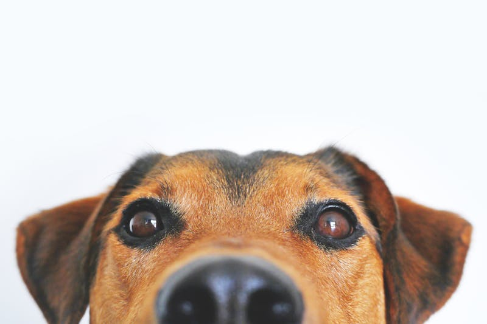

Find Your Perfect Companion
Give a loving home to pets in need. Browse hundreds of cats, dogs, and other animals ready for their forever families. Every adoption saves a life and creates an unbreakable bond. as a wise man once said
"Who rescued who? That's the question I ask myself every day."
500+
Pets Adopted
1,200+
Happy Families
50+
Partner Shelters
